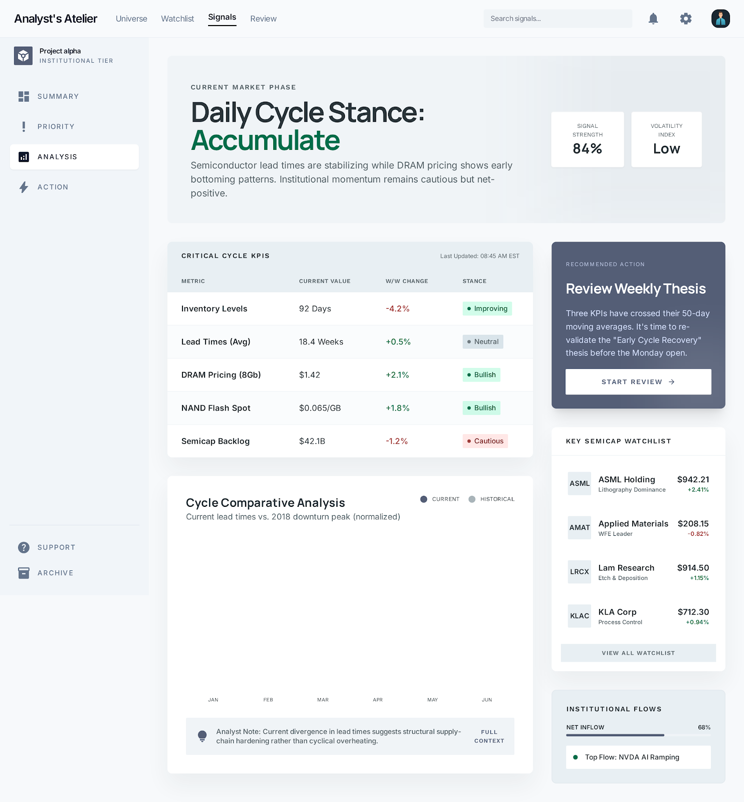

PF SAFE DEMO · 2026-03-16-p001
Chip Cycle KPI Snapshot
Turn scattered semiconductor cycle indicators into one quick scoreboard an investor can review in minutes.
ingest status
Imported from Stitch exportStitch export wrapped in a PF-safe shell so the approved visual can publish cleanly without remote dependencies.
- Source preserved as local artifact
- Public demo path avoids remote CDN dependency
- Preview uses the shipped Stitch screen
